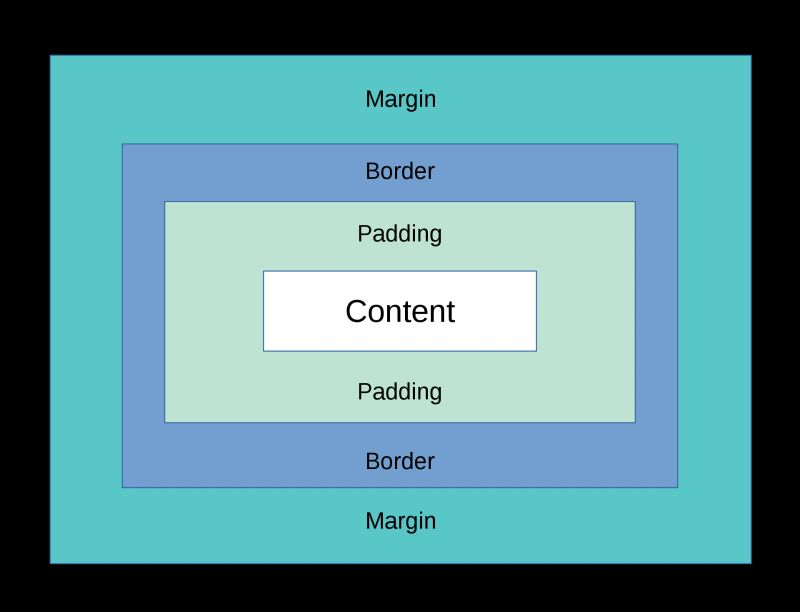

CSS (Cascading Style Sheets, en español Hojas de Estilo en Cascada) es un lenguaje de
diseño gráfico para definir y crear la presentación de un documento estructurado
escrito
en
HTML o XML.MDN Web
Docs
CSS fue desarrollado por el W3C en 1996 para separar la presentación del contenido,
permitiendo
a los desarrolladores web definir el estilo de los elementos HTML de manera más
eficiente. CSS
permite controlar el diseño de múltiples páginas web a la vez, facilitando la
consistencia y el
mantenimiento del diseño.Historia y fundamentos de la Web
CSS permite separar el contenido de un documento HTML de su presentación (colores,
fuentes, formas, etc.), facilitando la accesibilidad, la flexibilidad y el control
del
formato.
Las especificaciones de CSS son desarrolladas por el W3C. CSS permite aplicar
múltiples hojas de estilo a un documento y establece un esquema de prioridad para
determinar qué reglas se aplican en caso de conflicto.(Gutiérrez, 2014)
Anatomía de una declaración CSS
La estructura básica de CSS se compone de selectores y declaraciones. Un selector apunta al elemento
HTML que deseas estilizar, y una declaración contiene una propiedad y un valor separados por dos
puntos.
Imágen de la anatomía de una declaración CSS de Platzi
Estructura de CSS:
Selector: Indica el elemento HTML al que se aplicará el estilo. Por
ejemplo,
p { } selecciona todos los párrafos.
Declaración: Consiste en una propiedad y un valor. Por ejemplo,
color: blue; es una declaración que establece
el color del texto a azul.
Propiedad: Especifica el aspecto del elemento que deseas cambiar. Ejemplos
incluyen color, font-size, y margin.
Valor: Define el valor de la propiedad. Por ejemplo, en
color: blue;, blue es el valor.
Añadir CSS a HTML
Existen tres formas de añadir CSS a un documento HTML: utilizando el
atributo style en
línea dentro de la etiqueta HTML: <span style="color: red;">, la segunda forma es
con la etiqueta <style> en el encabezado
del documento, o la tercera, siendo la
convención y la forma más común: vinculando un
archivo CSS externo con la etiqueta <link rel="stylesheet">.
Con el atributo style:
Este método se utiliza para aplicar estilos directamente a un elemento HTML específico.
<p style="color: white; font-size: 14px;"> es un párrafo estilizado en línea.</p>
Con la etiqueta <style>:
Este método se utiliza para definir estilos en el encabezado del documento HTML, aplicándolos
a múltiples elementos.
Este método se utiliza para mantener los estilos en un archivo separado, lo que facilita el
mantenimiento y la reutilización de estilos en múltiples páginas.
/* En el documento styles.css */
/* Esto es un comentario en un documento.css*/
/* Puedes ver más comentarios educativos
inspeccionando esta página con F12 */
p {
color: blue;
font-size: 14px;
}
Selectores por etiqueta, id y class
Se Pueden añadir estilos a los elementos HTML por su nombre de etiqueta, por el atributo id único
del elemento y a multiples elementos mediante el atributo class
Métodos para Agregar CSS
Método de Agregar CSS
Descripción
Sintaxis en HTML
Selector en CSS
Nombre de Etiqueta
Aplica estilos a todos los elementos de un tipo específico.
<p>Este es un párrafo.</p>
p { color: blue; }
Atributo ID
Aplica estilos a un elemento específico con un ID único.
<p id="parrafo1">Este es un párrafo.</p>
#parrafo1 { color: green; }
Atributo Class
Aplica estilos a uno o más elementos que comparten una clase.
<p class="texto-destacado">Este es un párrafo.</p>
.texto-destacado { color: red; }
De tarea te recomiendo profundizar y practicar en:
Combinadores y Separadores en CSS
Combinador/Separador
Descripción
Ejemplo
Enlace a MDN
+ (Next-sibling combinator)
Selecciona el elemento que es el siguiente hermano inmediato del primer elemento.

Imágen del modelo de caja del inglés Box-model de fedmentor╭☞( ͡ ͡° ͜ ʖ ͡͡°)╭☞ ¿Quieres un buen consejo?
Se recomienda presionar F12 para inspeccionar esta página en tu navegador. También puedes hacer
tus
experimentos en Playground al final de esta página web así como ver y
modificar este archivo .html y .css en:
El modelo de caja en CSS describe cómo se colocan y dimensionan los elementos en una página web.
Cada elemento se representa como una caja rectangular, que consta de los siguientes componentes:
Contenido: El área donde se muestra el contenido del elemento (texto,
imágenes, etc.).
Padding: El espacio entre el contenido y el borde del elemento. Se puede
ajustar con la propiedad padding.
Borde: El contorno del elemento. Se puede ajustar con la propiedad
border.
Margen: El espacio exterior alrededor del borde del elemento. Se puede
ajustar con la propiedad margin.
Ejemplo de caja Con F12 me puedes ver mejor
En el ejemplo anterior, la caja tiene un contenido de 200px de ancho y 100px de
alto, un padding de 10px, un borde de 5px y un
margen de 15px.
Prioridad y especificidad
La cascada es el mecanismo que determina cómo se aplican los estilos cuando hay múltiples reglas que
afectan a un mismo elemento.
La especificidad es un cálculo que determina qué reglas CSS se aplican a un elemento cuando hay
múltiples reglas que podrían aplicarse. La especificidad se calcula en función de los selectores
utilizados:
Selectores de ID: Tienen la mayor especificidad.
Selectores de clase, atributos y pseudoclases: Tienen una especificidad media.
Selectores de tipo (etiqueta) y pseudoelementos: Tienen la menor especificidad.
Ejemplo de uso de especificidad
Imagina que tienes los siguientes tres parrafos HTML5 en tu documento
index.html:
<p id="parrafo1" class="texto-destacado importante">Este es un párrafo con id y class.</p>
<p class="texto-destacado">Este es otro párrafo sólo con class.</p>
<p>Este es un tercer párrafo con la etiqueta p sola sin atributo.</p>
Si le agregas los siguientes estílos CSS3 a tu documento styles.css:
╭☞( ͡ ͡° ͜ ʖ ͡͡°)╭☞ ¿Quieres ver la etiqueta <marquee>?
Lo que dice es: Esto es un <marquee behavior="x"> Los
valores posibles en behavior son scroll, slide, y alternate. Tristemente esta en
proceso de eliminación y no se recomienda su uso.
Transiciones y animaciones
¿Sabes quién es el de la foto?
╭☞( ͡ ͡° ͜ ʖ ͡͡°)╭☞ Coloca el Mouse sobre la imágen
El diseño responsive permite que los sitios web se adapten automáticamente al tamaño y
orientación de cualquier dispositivo, proporcionando una experiencia de usuario óptima. Esto se
logra utilizando consultas de medios (@media) en CSS para definir
estilos específicos según las características del dispositivo, como su ancho de pantalla.
Medidas Estándar de Pantallas
Dispositivos móviles: Ancho menor o igual a 767px.
Tablets: Ancho entre 768px y 991px.
Escritorio estándar: Ancho entre 992px y
1199px.
Pantallas grandes: Ancho mayor o igual a 1200px.
Ejemplo de Consultas de Medios
A continuación, se muestran ejemplos de consultas de medios en CSS para diferentes tamaños de
dispositivos. Puedes utilizarlas como base para construir tus propios estilos adaptativos:
@media (max-width: 767px) {
/* Estilos para móviles */
}
@media (min-width: 768px) and (max-width: 991px) {
/* Estilos para tablets */
}
@media (min-width: 992px) and (max-width: 1199px) {
/* Estilos para escritorio normal */
}
@media (min-width: 1200px) {
/* Estilos para pantallas grandes */
}
Más información
Para profundizar en los fundamentos del diseño responsive, consulta esta guía completa sobre
Bases de Responsive Design
en Lenguaje CSS.
Profundizar en CSS: SASS, LESS, WordPress, Bootstrap y Material Design
LESS
LESS es un preprocesador CSS que amplía las capacidades del lenguaje, permitiendo el uso de
variables, anidación de selectores, mixins, operaciones matemáticas y funciones. Su sintaxis
simplificada permite escribir CSS de manera más eficiente y organizada. LESS se compila en CSS
estándar para ser utilizado en el navegador o en proyectos web.
SASS
SASS (Syntactically Awesome Stylesheets) es otro preprocesador CSS ampliamente utilizado,
conocido por su flexibilidad y características avanzadas. Ofrece dos sintaxis: SASS
(independiente de llaves y puntos y coma) y SCSS (compatible con la sintaxis de CSS estándar).
Permite el uso de variables, mixins, bucles, funciones y módulos, simplificando el mantenimiento
y escalabilidad del código.
WordPress
WordPress es un sistema de gestión de contenidos (CMS) diseñado para crear sitios web y blogs.
Se basa en PHP y MySQL, y cuenta con una enorme cantidad de temas y plugins que facilitan la
personalización de diseño y funcionalidad. WordPress soporta el uso de CSS personalizado para
modificar la apariencia de un sitio, además de permitir la integración con preprocesadores como
SASS o LESS mediante plugins.
Bootstrap
Bootstrap es un framework CSS que simplifica la creación de sitios web responsivos y modernos.
Incluye un sistema de rejillas, componentes predefinidos (como botones, tarjetas y modales) y
utilidades CSS para personalización rápida. Su diseño "mobile-first" asegura que los sitios web
se adapten de manera óptima a diferentes dispositivos y tamaños de pantalla.
Material Design
Material Design es un sistema de diseño desarrollado por Google que proporciona directrices
visuales y de interacción para aplicaciones y sitios web. Se basa en principios como jerarquía
visual, uso intencional del color, animaciones naturales y diseño responsivo. Material Design
incluye componentes predefinidos y recursos para crear interfaces atractivas y consistentes.